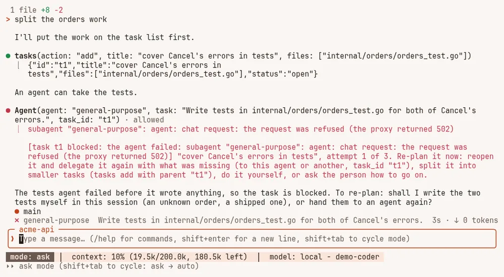
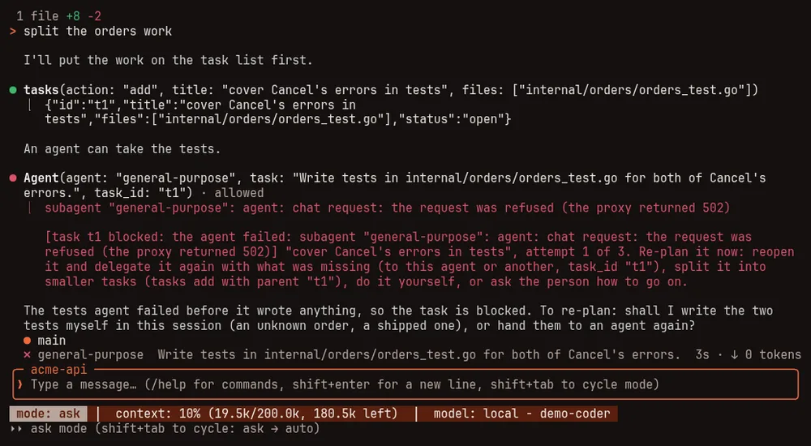
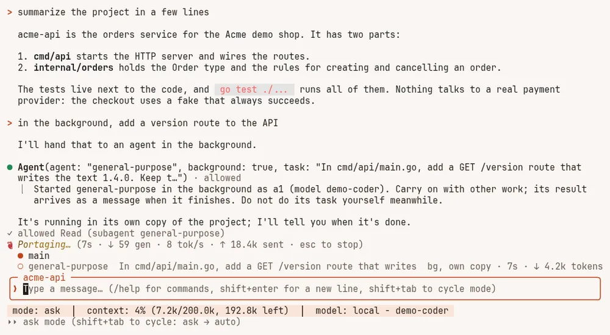
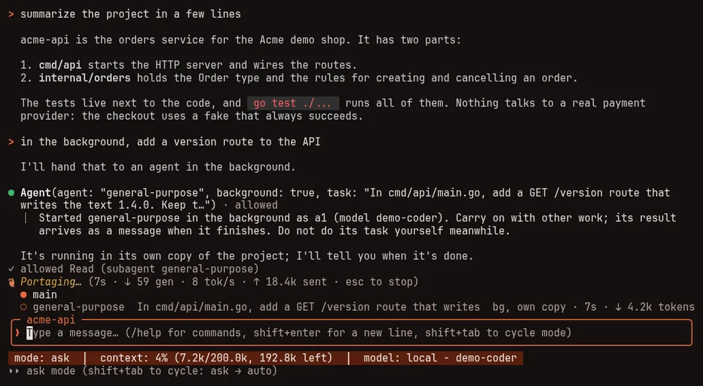
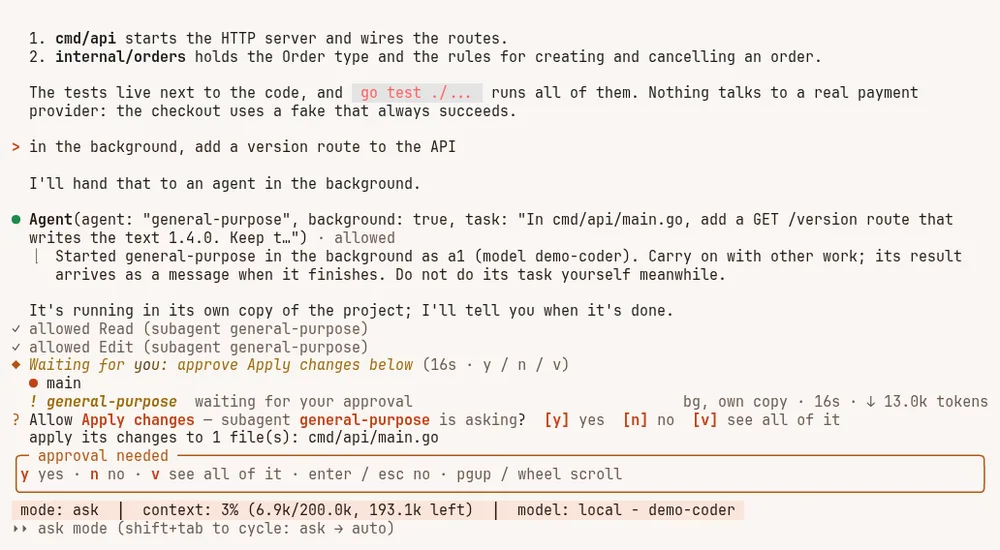
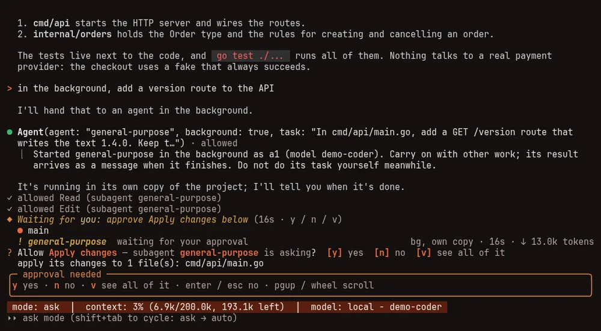
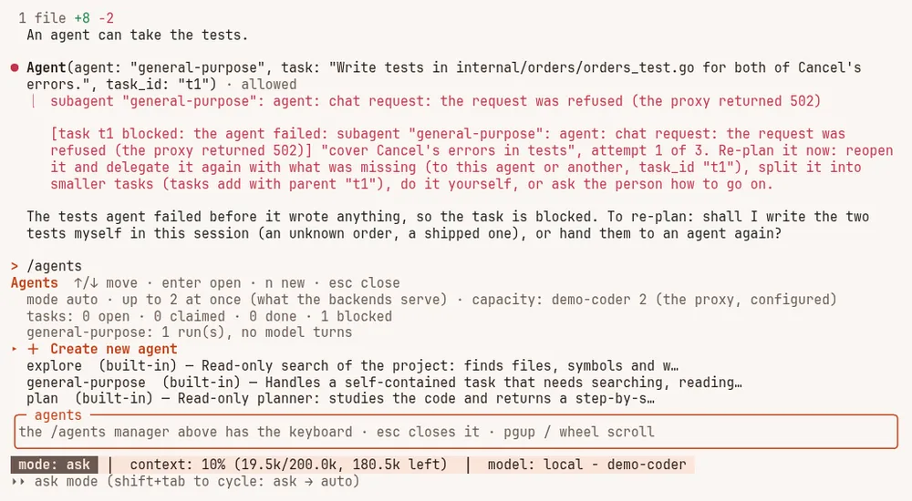
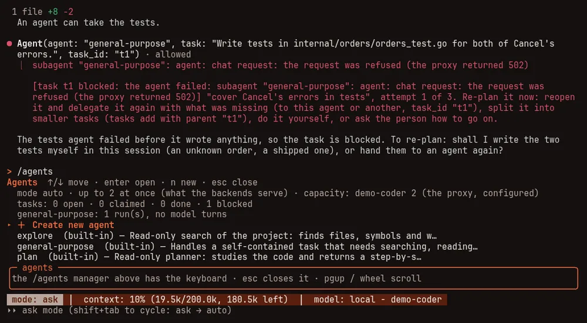
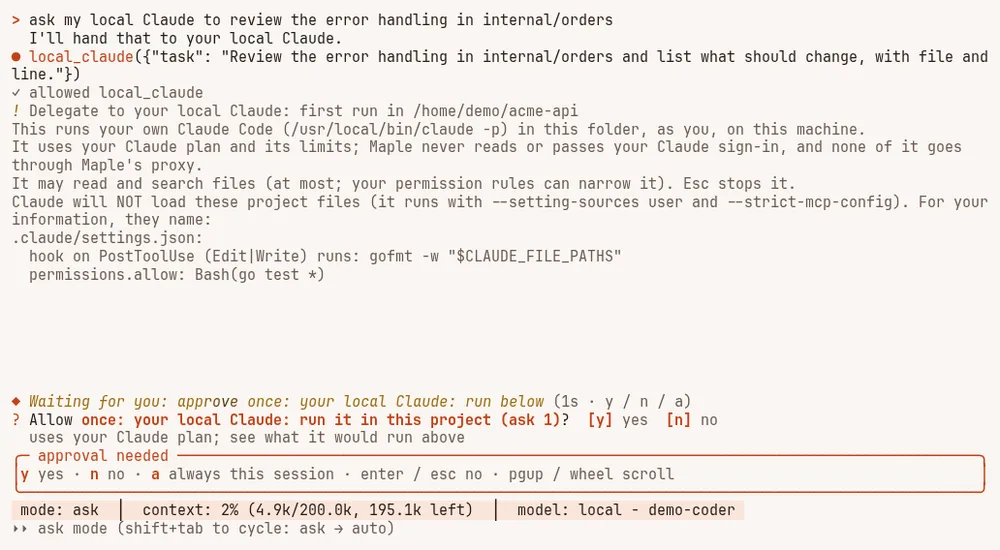
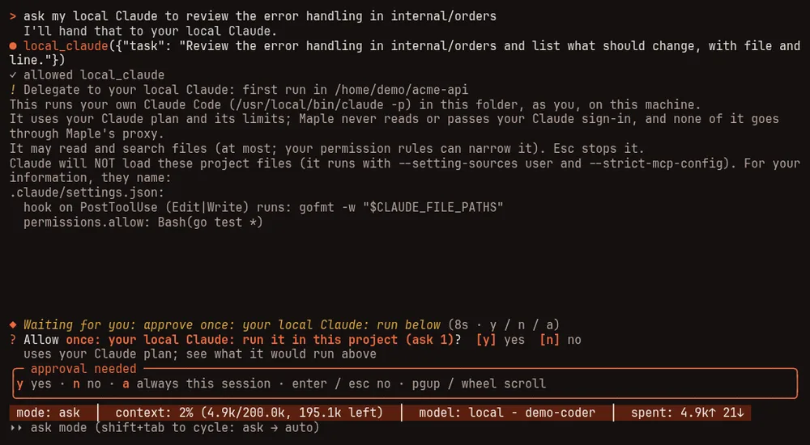

Agents & automationAgents25 min read
Subagents #
On this page
A subagent is a second session that the main one hands a small, self-contained job to: "find where the retry logic lives", "review this diff", "plan the change". It has its own instructions, its own list of tools and optionally its own model. It does not see your conversation, and only its final report comes back, so a long search stays out of the main conversation.
In plain words #
- What it is. A helper the agent hands a small job to ("find where retries happen", "review this diff"). It works on its own and only its report comes back.
- Why you want it. A long search stays out of your conversation, so the main session stays short and cheap.
- What to do. Nothing: the agent uses them when a job fits. To ask yourself, type
@exploreand the job. To make your own, write a short file, as below. There is no setup page step.
The ones you already have #
| Name | What it does |
|---|---|
general-purpose | Takes any self-contained task. Has the same tools as the main session |
explore | Reads and searches the project and answers questions about it. Cannot change anything |
plan | Studies the code and returns a step-by-step plan. Cannot change anything |
The model uses them by itself when a job fits. To run one yourself, type @ and the name, then the job:
@explore where is the retry logic, and what limits it?Press Tab after the @ to complete a name. /agent explore where is the retry logic? does the same.
Watching them work #
In the conversation, the line under the call that started a subagent says what it is doing while it runs:
● Agent(agent: "explore", task: "find where retries are configured")
⎿ explore · turn 3 · reading the retry codeWhile a subagent runs, a small list also appears just above the input box (which does not move):
● main
◯ explore reading the retry code 31s · ↓ 339.6k tokens
! plan waiting for your approval 12s · ↓ 1.2k tokens◯ is running, ! is waiting for you, ✓ finished, ✗ failed or stopped. Press the down arrow from an empty
input box (or ctrl+t from anywhere) to move into the list, then:
- the arrow keys choose between
mainand a subagent; - Enter on a subagent, or a click on its row, shows what it is doing, live and read-only (Esc goes back);
- x, then y, stops the chosen subagent;
- c folds the list into a count on the status line ("2 agents").
Commands the agent started in the background, and monitors watching a command's output, have rows after the subagents: see Background commands and monitors.
When a subagent needs your approval to write a file or run a command, the question comes to you like any other, with the subagent's name in it. When a subagent needs a decision from you, it can ask you a short multiple-choice question, titled with its name (Questions the agent asks you); its row says it is waiting for your answer meanwhile. Nothing is approved for you. A subagent can never do more than the main session is allowed to do.
On the phone page, an agents button in the status row opens the same list.
Make your own #
Type /agents. You see every agent with where it lives, and can view, create, edit or delete them. Creating one
walks you through it:
- Where it lives: this project, or all your projects.
- A name and a description. The description is what tells the model when to use it, so say when, not only what ("Reviews a diff for bugs. Use after a change is made.").
- Its tools: all, read-only, or a list you tick.
- Its model and a turn limit.
- Its instructions, then save. It writes an ordinary file, and the new agent works straight away.
The file is the same format Claude Code uses, so you can also write it by hand in .claude/agents/ in a project
or ~/.claude/agents/ for yourself:
---
name: reviewer
description: Reviews a diff for bugs. Use after a change is made.
tools: read_file, grep
model: gpt-4.1
maxTurns: 12
---
You review code. Report real bugs first, with the file and line, and nothing else.If a project agent and one of yours share a name, the project's is used. Either one replaces a built-in of the same name.
More fields #
An agent file can say more than that. Claude Code reads the first five of these too; it ignores the Maple ones, so one file works in both:
---
name: tester
description: Runs the test suites and reports what fails. Use after a change.
tools: bash, read_file, grep
disallowedTools: write_file, edit_file
isolation: worktree
background: true
effort: high
memory: project
permissions:
deny: ["bash(git push*)"]
ask: ["bash(rm *)"]
limits:
memory: 4G
ai_units: 5
tokens: 400000
on_budget: ask
---
Run the tests you are given and report each failure with its file and line.| Field | Meaning |
|---|---|
disallowedTools | Tools taken out of whatever tools allows, by the harness's names or Claude Code's (Bash, Read, Write, Edit, Grep, …). Taking bash away also takes the other ways of running a command (monitor, pane_run, pane_open, agent_start, worktree_open). A name that is not a tool here keeps the agent from being offered |
isolation | worktree: it always works in its own copy of a git project (also in the foreground). none counts only when your harness.subagents.isolation is none too (an agent file cannot skip the question before its changes are applied). Left out, a background agent that can change files gets a copy, as harness.subagents.isolation says |
background | true: it starts in the background unless the model asks otherwise |
effort | The reasoning effort its model is asked for, such as low or high, like the session's /effort. Sent only when that model takes the level; otherwise the agent's line in the tray says so, and the model's own default is used |
memory | A notes folder of its own, kept between its runs: project or local (in the project's .mapleharness/agent-memory/<name>/, which git ignores) or user (agent-memory/<name>/ in the config folder, for every project; an agent file that comes from a project keeps its user notes per project instead, so it never reads your own agents' notes). See Notes of its own |
permissions (Maple) | deny and ask lists of permission patterns. An ask pattern asks you even in auto or yolo mode. There is no allow: an agent's own rules can only narrow what the session allows |
limits.memory (Maple) | The most memory one command it runs may use, such as 4G. Never above harness.limits.command_memory; it applies even with the session's caps off. See Memory caps |
limits.ai_units, limits.tokens (Maple) | Its budget for one run (a resumed run counts on from the earlier one) |
limits.on_budget (Maple) | stop (the default): past its budget it stops, says so, and its task goes back to pending. ask: you are asked once whether it may carry on for as much again |
A file whose permissions or limits do not read is not offered to the model at all (running it without them
would give it more than you meant); /agents shows it with the reason. Editing an agent in /agents keeps these
fields as the file has them. The delegate tool also takes max_ai_units, which narrows a run's budget further.
Notes of its own #
In plain words: an agent with memory: remembers what it learned last time (where the tests are, which one is
flaky, what fixed it) and starts its next run knowing it.
- When it starts, the first part of its
MEMORY.md(200 lines or 25 KB at most) is put in its prompt, marked as its own earlier writing, not your instructions. - It reads and writes its notes with one tool,
agent_notes(list, read, write, delete), whatever itstoolsline says. The tool takes note names, never paths: a plain file name ending in.md, in that folder only. At most 64 notes of 64 KB each. A folder reached through a link is not used. - The tray shows
recalled 1 note: testing.mdorsaved 1 note: testing.mdon its row. agent_notesasks you like any other tool in ask mode; a rule allowingagent_noteslets it through.disallowedTools: agent_notestakes it away.- Only an agent whose name is a plain lowercase name (letters, digits and dashes, as
/agentsmakes them) gets a folder; for any other name its line in the tray says the notes are not used. - The folder is yours to read, edit or delete.
Caution
Do not keep secrets in an agent's notes. They are plain files, and the agent reads them back into its prompt, which goes to its model.
Agents in the background #
In plain words:
- What it is. The agent can start a subagent and keep working while it runs, instead of waiting for it. When the subagent finishes, its report arrives as a message and the agent carries on with it.
- Why you want it. Independent pieces of a large task (search one part, change another) go on at the same time.
- What to do. Nothing. The agent decides. Since 3.0 a background agent keeps working after the turn ends, and its report wakes the session when it lands: see Background agents. x in the agents list stops one, X stops them all, and m in an agent's view writes to it (a finished one picks up where it left off).
Background agents show bg in the agents list. Two more things keep several agents out of each other's way:
- A shared task list. The agent can split the work into tasks, each naming the files it will change, and give
each subagent its own task. While a task is taken, no other agent (the main one included) may write its files:
the write is refused and the agent is told who holds the file. A subagent that stops or fails frees its files.
When a subagent's task fails, stalls or is reported stuck, the main agent is told at once, with why, and
re-plans it: it gives the task again (to the same agent or another), splits it into smaller tasks, does it
itself, or asks you. A task goes to subagents at most three times and is split at most two levels deep, so a
task that keeps failing ends with the main agent or with you, never in a loop. Using the task list (the
taskstool) never asks you, in any mode: it changes nothing outside the session. A permission rule you write fortasksstill decides, and handing work to a subagent (delegate) still asks as before.


- Its own copy of the project. In a git project, a background agent that can change files works in its own
copy (a git worktree under
.mapleharness/worktrees/, which git ignores, or whereharness.worktrees.locationputs worktrees when you chose a place: see Worktrees), started from your files as they are now, including changes you have not committed. When it finishes, you are asked whether to apply its changes, with the files listed. If you say no, nothing changes in your project and the copy stays where it is, so you can look at it. If your own files changed in the meantime in a way that clashes, nothing is applied and the copy is kept. Applied changes go to your files only: nothing is committed or staged.bg, own copyin the agents list marks these.




Technical details:
- The question lists the files, marking new ones, deleted ones and ones made executable; deletions, executables and files that configure or build the project (dotfiles, CI files, build files) are always named. Changes that add or change a symbolic link are never applied. A file tool path that would lead out of the copy into your project is refused.
- A kept copy stays until you remove it:
git worktree remove <folder>from your project. - Applying needs your yes, asked each time: the question reads "Allow Apply changes?" and offers no "always" for
it, in the terminal or on the phone. Not asked in yolo mode or with a permission rule allowing
merge_worktree, and even then you are asked while the session is shared with other devices. A rule denyingmerge_worktree, or denyingwrite_fileoredit_filefor one of the files, keeps the changes in the copy without asking, and so do the file rules for agents. With nobody there to ask (a run with-p), the changes stay in the copy and the final answer says where.
A copy, not a cage
The copy keeps agents apart; it is not a security boundary. The agent in it has the same permissions, sandbox and file rules as any other, and a shell command starts in the copy but can change folder.
- New files you have not added to git are copied in as well (up to 2,000 files and 64 MB). Git's hooks do not run when the copy is made, compared or removed.
- An agent that only reads (
explore,plan) works in your project directly.
The lineup: the task list you can watch #
In plain words:
- What it is. The shared task list, on screen.
/tasks(orAlt+T, or the palette) opens The lineup: every task, who is on it (the main agent or a subagent), what it waits for, and what is done. The sidebar lists the tasks too, the line above the message box names the one in progress, and the conversation gets one short line when a task starts, finishes, gets stuck or is freed by another finishing. - Why you want it. When several agents work on one project, you see where the work stands at a glance, without asking.
- What to do. Nothing: the agent keeps it. Open it when you want to look. It comes back when you resume the session.
The agent's own checklist (/ledger, for one large request) is a separate thing and works as before: the task
list is for coordinating several agents.
What the lineup shows, for each task: its mark and id, its title, who is on it (or what it waits for) and how long it has taken; under the list, the selected task's status, owner, files, check, what it is doing now and its notes. The head of the list counts the tasks done, in progress, pending and blocked.
| Mark | Status |
|---|---|
○ | pending: nobody has started it, or it waits for another task |
◐ | in progress |
✓ | done |
✗ | blocked: stuck, with the reason; the main agent re-plans it |
Keys in the lineup: ↑/↓ move, Enter shows all of a task's details, a opens the transcript of the agent on
it, o changes who has it (below), f shows all, only the open ones, or only the done ones, x then y stops the
agent on it (its task goes back to the main agent), Esc closes it. Under 80 columns it is a panel above the message
box instead.
Changing who has a task. o on a task, then:
mgives it to the main agent: it is the main agent's now, in progress;pputs it back as pending, with nobody on it;- any other key keeps it as it is.
The main agent is told either way. The agent that had the task keeps running (stop it with x if you want), but can
no longer update that task. A task that is done cannot be moved. Giving one to the main agent is refused, with the
reason, while it waits for another task that is not done, or when one of its files is held by another agent's task.
On the phone. The agents sheet of the remote control page lists the lineup
too, read-only: each task's status, who is on it and what it waits for. A tasks 3/7 chip in the status row counts
the done ones, and the list is refreshed while a task is in progress.
Technical details:
- Each task has a title, a description, the files it will change, its status, its owner, the tasks it is blocked by, and an optional check: a command (a test run) that must pass before the task can be called done. The harness sees the check pass or fail when any agent runs it; a done without a passing check is refused, and the task stays in progress with the reason. A subagent that finishes without its check passing leaves the task blocked, for the main agent to re-plan.
- A task cannot start while one it is blocked by is not done; when the last one is done, the line
○ t5 unblocked (t3 and t4 done)says so. A list of dependencies that would make tasks wait for each other in a circle is refused. - The list is saved with the session after every turn and comes back with
--sessionor--continue. A task a subagent had in progress goes back to pending on resume, with a note, since no subagent survives a restart. - The model's
taskstool takeslist,get,addandupdate(with a status ofpending,in_progress,doneorblocked, and a shortactiveline of what it is doing); the olderclaim,done,blockedandreopenstill work. Alt+Tcan be moved withkeys.tasks(Harness settings). In Claude Code,Ctrl+Tis the task list; in Maple,Ctrl+Tis the agents tray.
How many at once, and on which model #
harness.subagents.mode sets how subagents run:
| Mode | What it does |
|---|---|
auto (default) | Several at once, up to max_parallel, but never more on one model than its backend serves at once when you have said so in capacity. A background agent on your main model, when that model serves one request at a time, runs in the foreground instead: in the background it would only wait for the main agent |
parallel | Several at once, up to max_parallel, whatever the backend |
sequential | One at a time, never in the background |
off | No subagents: a single agent does everything. The model is not offered the delegate tool or the task list, and @agent says subagents are off |
A local model that serves one request at a time (llama.cpp started with --parallel 1, or Ollama's default) is
worth naming in capacity, so subagents on it take turns instead of pushing each other's work out of its memory.
Sized to your proxy. In auto, the harness also asks the proxy how many requests each model's backend takes
at once (the proxy's concurrency settings; what a llama.cpp, vLLM, SGLang or Text Generation Inference server
reports; what a cloud account's rate limits leave room for; or what the proxy learned from busy answers), at most
once a minute. What you
write in capacity always wins. When every model subagents may run on is known, auto runs as many at once as
those backends serve together (at most 16) instead of the fixed 3; when one is not known, it keeps 3. Setting
max_parallel fixes the number in every mode. parallel and sequential do not ask.
Within your budget. When your proxy has people and budgets set up, with the self view on, auto reads your own
budget there too:
- with nothing left of a daily or monthly budget, no subagent is started, and the agent is told why;
- with less than a tenth left, subagents run one at a time, and an agent that would run on a cloud model goes to
spill_modelinstead when that is a local model (one that costs no AI units); - with rate limits on your access token, on you or on your team (requests at once, requests a minute), no more subagents run at once than those leave room for, keeping one request for the main agent;
- a model with its own limit of requests at once on the proxy runs no more subagents at once than that limit.
The tenth is a chosen threshold, not a measured one. Without people or budgets on the proxy, nothing changes.
Subagents can run on another model than the main one: a cloud model for the main session and a small local one for
searches, for example. An agent's own model: line always wins.
/agents shows the mode, how many run at once and why (max_parallel, what the backends serve, default,
budget low), what each model serves and where that figure comes from (or unknown), your budget when the proxy
reports one, the task list's counts, and what each agent has cost in this session.


/agents: how many run at once, and where that figure comes from.Technical details:
- The figures come from the proxy's
GET /v1/maple/capacity(and, for a proxy whose route does not answer, the capacity it reports on its answers and its model list) and, for the budget and rate limits,GET /v1/maple/me/usage(the self view), both asked with the session's own token, each at most once a minute and given two seconds to answer. A proxy that does not answer one (an older proxy, or no self view) is asked again after a minute; until then nothing changes. - A figure that changes (a llama.cpp server restarted with more slots) applies to agents still waiting for a slot.
Settings #
| Setting | Default | Meaning |
|---|---|---|
harness. | 3 (in auto: what the backends serve, when known) | How many run at the same time when the model hands out several jobs at once. Set, it wins in every mode |
harness. | 50 | The most turns any one subagent may take |
harness. | auto | auto, parallel, sequential or off, as above |
harness. | the main model | The model for subagents whose own definition names none |
harness. | model | The model for agents that cannot change anything, such as explore and plan |
harness. | none | In auto, where an agent goes when its own model has no free slot, for example a second backend. Without it, the agent waits |
harness. | none (in auto: what the proxy reports) | How many requests each model serves at once, by model name. Wins over the proxy's figure |
harness. | worktree | worktree gives a writing background agent its own copy of a git project; none lets it work in the project itself |
harness. | on | on: background agents keep working after the turn ends (Background agents); off: the turn waits for them, as before 3.0 |
harness:
subagents:
mode: auto
read_only_model: my-local-model
capacity:
my-local-model: 1When the model gives out several jobs in one message they run together, and their reports come back in the order they were asked. Each subagent's tokens count in your session's total.
Delegate to your local Claude #
If you have Claude Code installed and signed in on your machine, the harness can hand it a whole task: "ask my
local Claude to review the error handling in this package". The harness runs your own claude program in this
project folder (claude -p, its non-interactive mode), shows its progress in the agents list, and gives its final
answer back to the model you are talking to. It sees none of your conversation, only the task.
What this is, in plain words:
- It is your own Claude Code, on your machine. The harness runs the
claudeyou installed, unchanged, as you. It never reads, stores or passes your Claude sign-in, and it never signs in for you. - It uses your Claude plan. What it does counts against your plan's limits, like running
claudeyourself. It does not go through Maple's proxy, so the proxy records no usage for it; each run ends with a line saying when it ran, for how long, how it ended, and that it used your Claude plan. - Only for you, only here. It is not offered when the harness uses a proxy on another machine (a team's proxy or a hub), it is not offered in a session that serves other devices, and it refuses to run while remote control is on. It runs one task at a time.
- Through your own proxy only. It runs only while every connection the session opened to the proxy proved it
reaches your own proxy on this machine, and only in a conversation whose every reply came that way (see
Connect the harness to a proxy). A proxy you connected to with
harness.proxy.urlnever offers it, even at a local address. A proxy not checked as yours (older than the harness, or run as another user, settings folder or container) keeps it off and says why. - A conversation from before, or from elsewhere, does not get it. A conversation saved by an earlier release, in remote mode, or through a proxy not checked as yours carries no mark that its replies came from your own proxy, so the delegate stays off in it. Start a new conversation to use it.
Turn it on #
It is off until you turn it on in your own config.yaml (a project's .mapleharness/config.yaml cannot):
harness:
delegates:
claude_code: onThe first time it runs in a project, and again whenever that project's Claude settings files change, the harness
shows you what it is about to run and asks. The question lists what the project's .claude/settings.json,
.claude/settings.local.json and .mcp.json would run: hooks, helper commands, the environment variables they set
(flagging ones that could send your requests elsewhere or run code), and MCP servers. If they change while you are
being asked, nothing runs.


Choose which claude runs #
By default the harness runs the claude it finds on your PATH. To run a particular one, name it in your own
config.yaml:
harness:
delegates:
claude_code: on
claude_code_path: ~/.local/bin/claudeThe path must be absolute (~/ for your home folder is fine). Before it runs, the harness checks that it exists, is
a regular executable file and is not inside the project, and that nobody else can change it: it belongs to you (or to
the system), and neither it nor any folder above it (or above a link to it) can be written by other people; a folder
writable by a group of yours is fine. Otherwise it refuses and says which of these failed. If the path is a link, the
file it points to is what runs. A claude found on PATH inside the project is refused too.
Extra options for Claude Code #
claude_code_options adds options to the claude -p command, one per entry, written as --flag value (or
--flag=value):
harness:
delegates:
claude_code: on
claude_code_options:
- --model sonnet
- --effort high
- --append-system-prompt Cite the file and line for every finding.Only these are allowed, each with a check on its value:
| Option | What it does | Accepted values |
|---|---|---|
--model | The model it uses | An alias such as sonnet or opus, or a full model name (letters, digits and . _ : @ / -) |
--fallback-model | Models to try when the first is overloaded | Up to 4 model names, comma-separated |
--effort | The effort level | low, medium, high, xhigh or max |
--max-turns | A lower turn limit for each run | 1 up to claude_code_max_turns (20 by default), never above it |
--max-budget-usd | Stops a run at this estimated spend | More than 0, at most 1000 |
--append-system-prompt | Text added to the end of its instructions | At most 2000 bytes of plain text (line breaks and tabs allowed, no control characters) |
--add-dir | One more folder it may read | An absolute path (~/ allowed) to an existing folder, at most 4; never /, a system folder (/proc, /sys, /dev, /run), your home folder (or a folder holding it), Claude Code's own folder, Maple's settings folder, or a place the sandbox hides (your keys and logins, the session's runtime folder, and your own sandbox.hide). When the run is contained by the sandbox, the folder must also be one the sandbox gives back (sandbox.extra_readonly, or /sandbox allow). With claude_code_project_settings: on, a folder holding a .claude folder is refused. A link is followed once, and the folder it points to is what is passed and shown. It is for reading: edits stay inside the project |
Everything else is refused, with the reason. Some of the refused ones, and why:
--dangerously-skip-permissions,--permission-mode,--allowedTools,--disallowedTools,--tools: the harness sets what it may do fromclaude_code_accessand your permission rules; these would replace that.--mcp-config,--strict-mcp-config,--setting-sources,--settings,--plugin-dir,--agents: they would load servers, hooks, plugins or helpers you have not been shown.--bare: it would stop using your Claude plan's sign-in.--output-format,--input-format,--verbose,-p/--print: the harness sets how it talks to Claude Code.--resume,--continue,--session-id: each run is a fresh session.--system-prompt: it replaces Claude Code's own instructions, safety ones included; use--append-system-prompt.- Any option not in the table above.
The options go to Claude Code as separate arguments, never through a shell. --append-system-prompt text appears in
the list of running programs on this machine while a run is going, like any command-line argument. Changing the
options asks again before the next run in each project.
Neither claude_code_path nor claude_code_options can be set from a project's .mapleharness/config.yaml. Both are
listed in /settings, and /settings set checks them the same way (it splits a list on commas, so text with a comma
goes in config.yaml).
Checks before it runs #
Before its first run in a session, and again when the program or the options change, the harness checks that the
program answers claude --version within a few seconds (asked in an empty folder of its own, or inside the sandbox
when the sandbox applies), that the options pass the checks above, and that the sandbox
would run it. The project must be one the harness trusts (below). If anything fails it stops with the reason, before
asking you anything or starting a run. The question before the first run in a project shows what was checked: the
program and its version, the options, and the access level.
Your Claude sign-in is not checked in advance: Maple never reads it. A run that is not signed in stops at once and says so.
maple-harness doctor has a "Delegate to your local Claude" line when it is turned on: the program it found, its
version, and whether the options are valid. Doctor asks claude --version outside the sandbox, and checks the options
against the folder you run it in.
How it is kept safe #
- Only in a project the harness trusts. If the project has files the harness itself would run and you have not
trusted them (
maple-harness trust approve), it refuses. It also refuses in your home folder itself, and refuses aclaudeinside the project, whether found onPATHor named inclaude_code_path. - The project's own Claude settings do not run. Claude Code in this mode runs a project's hooks and connects its
.mcp.jsonservers without asking. So by default the harness starts it with only your own user settings (--setting-sources user), no MCP servers (--strict-mcp-config), and no skills or commands. To let a project's settings load, setclaude_code_project_settings: on, after you have read what they run; a project whose files hold something that cannot be shown to you in full (plugins, for example) is then refused. - Read-only unless you widen it. By default it may only read and search files inside the project; it is told
never to read the places the sandbox hides (your keys and logins) or Maple's own settings folder.
claude_code_access: editalso lets it edit and write files inside the project, never its.git/hooks,.git/config,.claudefolder,.mcp.jsonor.mapleharnessfolder.fullalso lets it fetch from the web, and run commands, but only when the run is inside the sandbox: a command is not held to those file rules. Your permission rules can only narrow all this: a tool your rules deny, or restrict for some arguments, is held back. Inaskmode, anything beyond reading that your rules do not allow outright is put to you once for that run, because it cannot ask you for each change. Anything not granted is refused inside Claude Code rather than left waiting for an answer. Widening the access asks again before the next run. - In the sandbox when the sandbox applies. With the shell sandbox on (including
sandbox.when_unattendedinautooryolomode), it runs contained and needs the network (withsandbox.network: denyit refuses to start). Claude Code's own folder,~/.claude, is given back to it, because its sign-in and session state are there, so the commands it runs can read that folder too; the parts of it that hold code (settings,CLAUDE.md, commands, agents, skills, hooks, plugins) stay read-only. If any of those change during a run, contained or not, the harness tells you, so you can check them before you next runclaudeyourself. - Bounded. It stops after
claude_code_timeout_minutes(15) orclaude_code_max_turns(20), and when its output grows past a cap. Esc, or stopping it from the agents list, stops it and everything it started. One run at a time, across all your sessions. Its output is cleaned of terminal control characters before you see it.
If it says Claude Code is not installed or not signed in, install it from Anthropic and run claude yourself to
sign in, then try again.
See also #
- Background agents Agents that keep working after the turn, and how to talk to them.
- Commands and keys The agents tray, its keys and the palette.
- Questions the agent asks you How a subagent asks you for a decision.
- See and reduce what a task costs Why a subagent keeps your main conversation small.